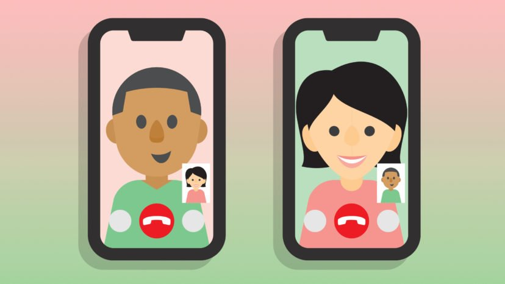
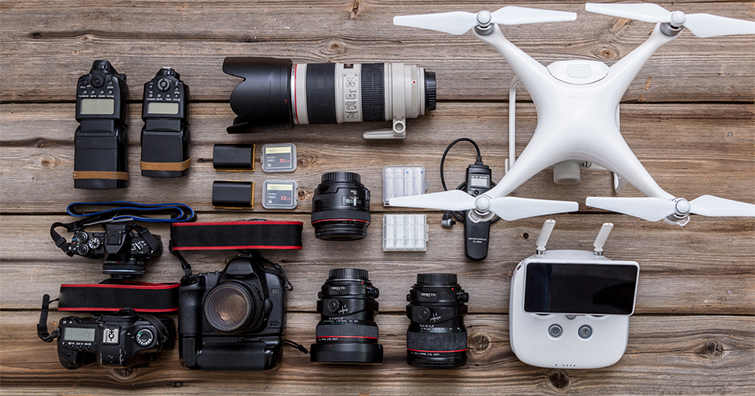

Blog Section
How Technology has affected our daily lives

Technology is something that grows and evolves over time and Over the years, technology has revolutionized our world and daily lives. Society and technology are not two separate things, as they grow alongside each other. That means large portions of everyday life are being affected by the constant stream of innovation and advancement in technology, which in turn allows us to have an even better life. Modern technology has paved the way for multi-functional devices like the smartwatch and the smartphone. Computers are increasingly faster, more portable, and higher-powered than ever before. With all of these revolutions, technology has also made our lives more easier, faster, better, and more fun. But in the past two decades technology has grown much rapidly like technology has given us smartwatches, tablets, and voice assistant devices and many more. nowadays we can do things like transfer money instantly and make purchases for everything from clothes, food delivery, groceries, furniture, and more. Technology has changed how we entertain ourselves, meet each other, and consume all types of media. It’s made fun advancements, but it’s also made important advancements in safety when it comes to home security and medical devices.
Technology Affects on Student in covid
Now, in the middle of a global pandemic, technology has assumed an even greater role in the education of our kids. At the height of the COVID-19 outbreak, over 1.5 billion children across the world were taken out of the classroom because of school closures, which, in turn, forced the widespread adoption of remote teaching technologies and the suspension of in-person instruction. There are serious doubts that education will ever return to what it was. In a recent survey of students and faculty, 83% of students and 89% of faculty believe that the COVID-19 pandemic will have a lasting impact on students in higher education.But one thing’s for sure, whether classrooms are set to permanently re-open, or whether a more hybrid online/in-person approach will become the new norm, technology will be at the center of the educational experience.
Technology Affects on communication
For better or worse, technology affects communication because it is a part of our everyday lives. It impacts the way we work, entertain ourselves, and stay in touch. You might see the average elementary-aged child with their head buried in a smartphone and tempted to take a gloomy outlook on what technology has done to us. But is it all bad? From a business perspective, you could argue that technology communication is beneficial. With this in mind, here’s a breakdown of everything you need to know about how technology affects communication with customers, plus how to use these developments to your advantage. On the one hand, technology affects communication by making it easier, quicker, and more efficient. It allows you to track conversations and therefore provide better customer service. Tech also makes it easier to gather customer insights and improve the entire customer experience. However, some fear technology affects communication by hindering our ability to build relationships with clients and will lead to brands becoming faceless entities.
Technology Affects on productivity
Technology has vastly increased productivity, since the ability of computers to solve complex mathematical equations has allowed them to speed up practically every task. Computer modeling permits engineers to simulate structures, vehicles, and materials to provide information on performance prior to prototyping. In the office, the ability of networked computers to share and manipulate data can speed up a variety of tasks – permitting employees to work more efficiently and maximize productivity. Technological advancements in agriculture have increased food production. In so many areas of our lives, critical time-consuming processes can now be executed with ease – and in a fraction of the time they once required.
Impact of Technology while Selling Camera Equipment:
Technology has reshaped the landscape of buying and selling camera equipment in numerous ways:
1. Online Marketplaces and Reviews:
The rise of e-commerce platforms and online marketplaces has revolutionized the way camera equipment is
bought and sold. Customers now have access to a vast range of options, enabling them to compare prices,
read reviews, and make informed decisions. Sellers can also leverage these platforms to reach a broader
audience and expand their customer base.
2. Rental and Sharing Platforms:
Technology has given birth to camera rental and sharing platforms, allowing photographers to try out
expensive equipment without committing to a purchase. These platforms provide a cost-effective solution
for photographers who require specialized gear for specific projects, fostering a collaborative and
supportive community.
Conclusion
Technology has undeniably had a profound impact on the photography industry and the selling of camera equipment. While it has brought forth tremendous positive changes, such as innovation, accessibility, and enhanced creativity, it also presents challenges in terms of cost and overreliance. As photographers, it is important to embrace technological advancements while nurturing our core skills and ensuring that the art of photography remains at the heart of our work. Ultimately, finding a balance between utilizing technology to its fullest potential and understanding the fundamentals of the craft will lead to the best outcomes. By staying informed, adapting to new tools, and remaining connected to the creative process, we can navigate the ever-evolving world of technology and continue to capture captivating moments that inspire and evoke emotions.